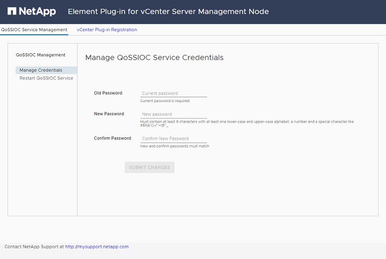
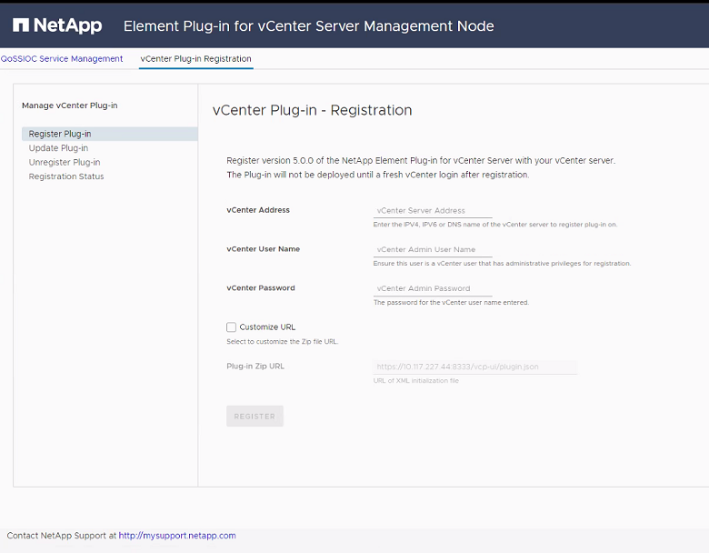
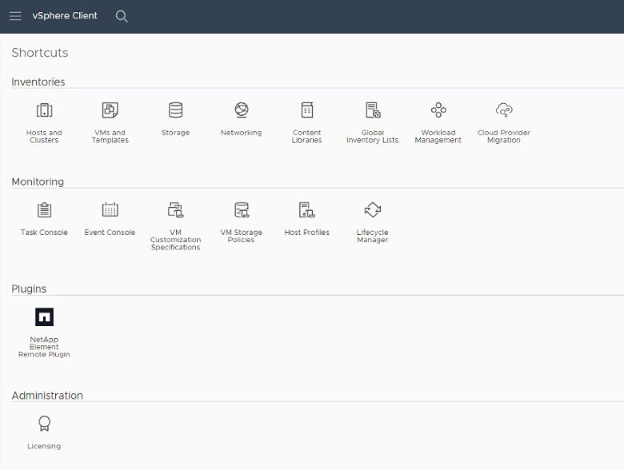

Demander de modifier un document
Demander de modifier un document Modifier sur GitHub
Modifier sur GitHub Guide des contributeurs
Guide des contributeursInstallation et configuration du plug-in Element 5.0 et versions ultérieures pour vCenter Server 7.0 et versions ultérieures
Contributeurs
Depuis le plug-in NetApp Element pour vCenter Server 5.0, vous pouvez installer la version la plus récente du plug-in Element directement dans votre vCenter et accéder au plug-in à l’aide du client Web vSphere.
Une fois l’installation terminée, vous pouvez utiliser la qualité de service basée sur le service de contrôle des E/S de stockage (QoSSIOC) ainsi que sur d’autres services du plug-in vCenter.
Lisez et effectuez chaque étape pour installer et commencer à utiliser le plug-in :
-
for installation
-
the management node
-
the plug-in with vCenter
-
the plug-in and verify successful installation
-
storage clusters for use with the plug-in
-
QoSSIOC settings using the plug-in
-
user accounts
-
datastores and volumes
Avant l’installation
Avant de commencer l’installation, vérifiez "de déploiement requis".
Installez le nœud de gestion
Vous pouvez effectuer manuellement "installez le nœud de gestion" Si votre cluster exécute le logiciel NetApp Element à l’aide de l’image appropriée pour votre configuration.
Ce processus manuel est destiné aux administrateurs du stockage 100 % Flash SolidFire et aux administrateurs NetApp HCI qui n’utilisent pas le moteur de déploiement NetApp pour l’installation des nœuds de gestion.
Enregistrez le plug-in avec vCenter
Le déploiement du module plug-in vCenter dans le client Web vSphere implique l’enregistrement du package en tant qu’extension sur vCenter Server. Une fois l’inscription terminée, le plug-in est disponible pour tout client Web vSphere qui se connecte à votre environnement vSphere.
-
Vous disposez des privilèges de rôle d’administrateur vCenter pour enregistrer un plug-in.
-
Vous avez déployé un nœud de gestion OVA exécutant le logiciel Element 12.3.x ou version ultérieure.
-
Votre nœud de gestion est sous tension avec son adresse IP ou son adresse DHCP configurée.
-
Vous utilisez un client SSH ou un navigateur Web (Chrome 56 ou version ultérieure ou Firefox 52 ou version ultérieure).
-
Vos règles de pare-feu autorisent l’ouverture "communication réseau" Entre vCenter et le cluster de stockage MVIP sur les ports TCP 443, 8443, 8333 et 9443. Le port 9443 est utilisé pour l’enregistrement et peut être fermé une fois l’enregistrement terminé. Si vous avez activé la fonctionnalité de volumes virtuels sur le cluster, assurez-vous que le port TCP 8444 est également ouvert pour l’accès à VASA Provider.
Vous devez enregistrer le plug-in vCenter sur chaque serveur vCenter où vous devez utiliser le plug-in.
Pour les environnements en mode lié, vous devez enregistrer des plug-ins distincts avec chaque serveur vCenter dans l’environnement pour synchroniser les données MOB et pouvoir mettre à niveau le plug-in. Lorsqu’un client Web vSphere se connecte à un serveur vCenter où votre plug-in n’est pas enregistré, le plug-in n’est pas visible pour le client.

|
À utiliser "Mode lié vCenter", Vous enregistrez le plug-in Element à partir d’un nœud de gestion distinct pour chaque serveur vCenter qui gère les clusters de stockage NetApp SolidFire. |
-
Entrez l’adresse IP de votre nœud de gestion dans un navigateur, y compris le port TCP pour l’enregistrement :
https://<managementNodeIP>:9443L’interface utilisateur d’enregistrement affiche la page gérer les informations d’identification du service QoSSIOC pour le plug-in.

-
Facultatif : modifiez le mot de passe du service QoSSIOC avant d’enregistrer le plug-in vCenter :
-
Pour l’ancien mot de passe, entrez le mot de passe actuel du service QoSSIOC. Si vous n’avez pas encore attribué de mot de passe, saisissez le mot de passe par défaut :
solidfire -
Sélectionnez soumettre les modifications.
Après avoir soumis les modifications, le service QoSSIOC redémarre automatiquement.
-
-
Sélectionnez enregistrement du plug-in vCenter.

-
Saisissez les informations suivantes :
-
L’adresse IPv4 ou le FQDN du service vCenter sur lequel vous enregistrez votre plug-in.
-
Nom d’utilisateur de vCenter Administrator.
Le nom d’utilisateur et les informations d’identification du mot de passe que vous entrez doivent correspondre à un utilisateur disposant des privilèges de rôle d’administrateur vCenter. -
Mot de passe de l’administrateur vCenter.
-
-
Sélectionnez Enregistrer.
-
(Facultatif) Vérifiez l’état de l’enregistrement :
-
Sélectionnez Statut d’enregistrement.
-
Saisissez les informations suivantes :
-
L’adresse IPv4 ou le FQDN du service vCenter sur lequel vous enregistrez votre plug-in
-
Nom d’utilisateur de vCenter Administrator
-
Mot de passe de l’administrateur vCenter
-
-
Sélectionnez Check Status pour vérifier que la nouvelle version du plug-in est enregistrée sur le serveur vCenter.
-
-
Dans le client Web vSphere, recherchez les tâches terminées suivantes dans le moniteur des tâches pour vous assurer que l’installation est terminée :
Download plug-inetDeploy plug-in.
Accédez au plug-in et vérifiez que l’installation a réussi
Une fois l’installation ou la mise à niveau terminée, le point d’extension du plug-in à distance NetApp Element apparaît dans l’onglet raccourcis du client Web vSphere du panneau latéral.

|
|
Si les icônes du plug-in vCenter ne sont pas visibles, reportez-vous à la section "documentation de dépannage". |
Ajout de clusters de stockage pour une utilisation avec le plug-in
Vous pouvez ajouter et gérer un cluster exécutant le logiciel Element à l’aide du point d’extension du plug-in distant NetApp Element.
-
Au moins un cluster doit être disponible et son adresse IP ou FQDN connue.
-
Identifiants actuels de l’utilisateur administrateur complet du cluster pour le cluster.
-
Les règles de pare-feu autorisent l’ouverture "communication réseau" Entre vCenter et le cluster MVIP sur les ports TCP 443, 8333 et 8443.
|
|
Vous devez ajouter au moins un cluster pour utiliser les fonctions de gestion. |
Cette procédure décrit comment ajouter un profil de cluster afin que le cluster puisse être géré par le plug-in. Vous ne pouvez pas modifier les informations d’identification de l’administrateur du cluster à l’aide du plug-in.
Voir "gestion des comptes utilisateurs d’administrateur du cluster" pour obtenir des instructions sur la modification des identifiants d’un compte d’administrateur de cluster.
-
Sélectionnez NetApp Element Remote Plugin > Configuration > clusters.
-
Sélectionnez Ajouter un cluster.
-
Saisissez les informations suivantes :
-
Adresse IP/FQDN : saisissez l’adresse MVIP du cluster.
-
ID utilisateur : saisissez un nom d’utilisateur administrateur de cluster.
-
Mot de passe : saisissez un mot de passe administrateur de cluster.
-
Serveur vCenter : si vous configurez un groupe en mode lié, sélectionnez le serveur vCenter auquel vous souhaitez accéder. Si vous n’utilisez pas le mode lié, le serveur vCenter actuel est le serveur par défaut.
-
Les hôtes d’un cluster sont exclusifs à chaque serveur vCenter. Assurez-vous que le serveur vCenter que vous sélectionnez a accès aux hôtes prévus. Vous pouvez supprimer un cluster, le réattribuer à un autre serveur vCenter et le réajouter si vous décidez par la suite d’utiliser d’autres hôtes.
-
À utiliser "Mode lié vCenter", Vous enregistrez le plug-in Element à partir d’un nœud de gestion distinct pour chaque serveur vCenter qui gère les clusters de stockage NetApp SolidFire.
-
-
-
Sélectionnez OK.
Lorsque le processus est terminé, le cluster apparaît dans la liste des clusters disponibles et peut être utilisé dans le point d’extension de NetApp Element Management.
Configurez les paramètres QoSSIOC à l’aide du plug-in
Vous pouvez configurer la qualité de service automatique basée sur le contrôle des E/S du stockage "(QoSSIOC)" pour les volumes individuels et les datastores contrôlés par le plug-in. Pour ce faire, vous configurez les informations d’identification QoSSIOC et vCenter qui permettront au service QoSSIOC de communiquer avec vCenter.
Après avoir configuré des paramètres QoSSIOC valides pour le nœud de gestion, ces paramètres deviennent par défaut. Les paramètres QoSSIOC reviennent aux derniers paramètres QoSSIOC valides connus jusqu’à ce que vous ayez les paramètres QoSSIOC valides pour un nouveau noeud de gestion. Vous devez effacer les paramètres QoSSIOC pour le noeud de gestion configuré avant de configurer les informations d’identification QoSSIOC pour un nouveau noeud de gestion.
-
Sélectionnez NetApp Element Remote Plugin > Configuration > QoSSIOC Settings.
-
Sélectionnez actions.
-
Dans le menu qui s’affiche, sélectionnez configurer.
-
Dans la boîte de dialogue Configure QoSSIOC Settings, entrez les informations suivantes :
-
Adresse IP nœud M/FQDN : adresse IP du nœud de gestion du cluster qui contient le service QoSSIOC.
-
Port nœud M : adresse de port pour le nœud de gestion qui contient le service QoSSIOC. Le port par défaut est 8443.
-
QoSSIOC ID utilisateur : ID utilisateur du service QoSSIOC. L’ID utilisateur par défaut du service QoSSIOC est admin. Pour NetApp HCI, l’ID utilisateur est le même que celui saisi lors de l’installation à l’aide du moteur de déploiement NetApp.
-
QoSSIOC Mot de passe : le mot de passe de l’élément QoSSIOC. Le mot de passe par défaut du service QoSSIOC est
solidfire. Si vous n’avez pas créé de mot de passe personnalisé, vous pouvez en créer un à partir de l’interface utilisateur de l’utilitaire d’enregistrement (https://[management node IP]:9443). -
ID utilisateur vCenter : nom d’utilisateur pour l’administrateur vCenter avec privilèges de rôle administrateur complets.
-
Mot de passe vCenter : mot de passe de l’administrateur vCenter avec privilèges d’administrateur complets.
-
-
Sélectionnez OK.
Le champ QoSSIOC Status s’affiche
UPlorsque le plug-in peut communiquer avec le service.
Consultez ce {url-pic}[KB^] pour résoudre le problème si l’état est l’un des suivants :
-
Down: QoSSIOC n’est pas activé. -
Not Configured: Les paramètres QoSSIOC n’ont pas été configurés. -
Network Down: VCenter ne peut pas communiquer avec le service QoSSIOC sur le réseau. Il se peut que le nœud M et le service SIOC soient toujours en cours d’exécution.
Une fois le service QoSSIOC activé, vous pouvez configurer les performances QoSSIOC sur des datastores individuels.
-
Configurer des comptes utilisateur
Pour activer l’accès aux volumes, vous devez en créer au moins un "compte utilisateur".
Créer des datastores et des volumes
Vous pouvez créer "Datastores et volumes Element" à commencer à allouer du stockage.